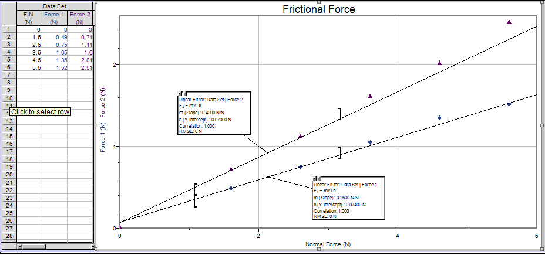

Frictional forces are the result of contact between two surfaces. Friction always opposes motion: static friction prevents objects at rest from beginning to move, while kinetic friction causes moving objects to slow down and stop. The theory of friction is the subject of tribology, and it can be very detailed and complicated. Therefore, instead of attempting to predict the magnitude of friction from first principles, we measure the effects of friction for a specific interaction. Equations obtained in this way, with constants and parameters determined experimentally, are called empirical relationships.
Although a detailed analysis of friction can be difficult, the following relationship is generally true:
In words, the magnitude of the frictional force is proportion to the normal force acting on the surface. The constant, μ, is the coefficient of friction and it is unitless since both friction and normal force are measured in Newtons.
This relationship holds for both static and kinetic friction. For static friction, the relationship determines the maximum frictional force that may be supplied until the object 'breaks friction' and begins to move. For kinetic friction, the relationship measures the average force parallel to the surface opposing motion while the object is moving.
Place an empty plastic CD case or a paperback book on a flat surface. The wood ramp from previous experiments may be a good contact surface. If using a CD case, a piece of folded notebook paper can be taped to the bottom to increase the likelihood that the two coefficients of friction will be clearly different. Loop a rubber band around the spine of the case or book to provide a place to hook the spring scale, and to allow for some 'give' when pulling on the case.
The mass of an empty CD case is approximately 50 grams and a paperback is about 100 grams. (Alternately, you can 'weigh' the object by hanging it from the spring scale.) Include this mass when making calculations.
Lay the case or book on the surface and pull on it gently and horizontally until the case just begins to move. Note the reading on the spring scale when that happens, repeating the action a few times to estimate an average value. Record the force to the nearest tenth of a Newton in the data table on the Report Sheet.
The system ready for data collection.
Next, pull the case horizontally across the surface at a constant speed and note the average force needed to do so. Recording this value in the data table as well. (It may be that for either or both conditions the force may be too small to read or very close to zero.)
Place a can of soda, a bottle of water, or another object of similar weight on the case or book and repeat the procedure for both static and kinetic friction. The mass of the filled can or bottle should be located at the bottom of the label, or the weight of the object in Newtons can be measured by hanging it from the spring scale.
Repeat the procedure by placing a second, third and fourth can/bottle/object on the case to increase the normal force. Gather a minimum of four measurements of the static and kinetic frictional forces as a function of normal force, recording all values in the data table on the Report Sheet.
In this example, the force of static friction was x.x and the force of kinetic friction was x.x for a normal force FN = (0.300 kg + 0 .05 kg)*(10.0 m/s2) = 3.5 N.
Convert the total mass of the case and all objects resting on it to the equivalent weight in Newtons by multiplying the total mass in kilograms by the acceleration due to gravity, g = 10 m/s2. If instead the weights of the objects were measured by hanging them from the spring scale, then just add the weights together. Because the surface was horizontal, the total weight pushing down on the case of book must equal the normal force.
Open Logger ProTM and record the normal force in the x-column and the static friction force in the y-column. Add a third manual column from the Data menu and record the kinetic friction force in it. Plot both the static friction and kinetic friction forces on the y-axis as a function of normal force on the x-axis on same graph by checking the 'Y-axis columns' boxes from the Axes Options tab of the Graph Options menu. Use the best fit option to find the coefficients of static and kinetic friction from the slope of the straight lines and record the values on the Report Sheet.
Save the file as friction.cmbl and submit it with the Report Sheet. The plot should show proper graphing technique: a title for the graph, labeled axes, a solid point symbol, etc.

For this sample data, the coefficient of static friction μs is 0.40 (violet triangles) and the coefficient of kinetic friction μk is 0.26 (blue diamonds).
Submit your completed Report Sheets for both Hooke's Law and Frictional Forces lab experiments to the Lesson 5 Lab: Hooke's Law & Frictional Forces assignment folder. Include any required Logger Pro files in your submission.
Note: your lab Report Sheet should be completed by hand. You will need to scan and upload the completed document as a PDF to the assignment folder.